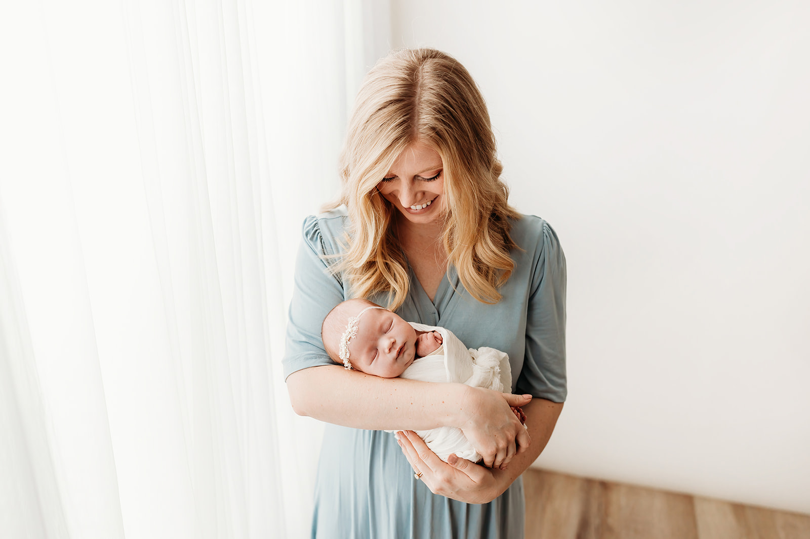

Safe
A secured postpartum floor, matching mother-and-baby security bracelets, visitor check-in, and staff on site day and night.
Postpartum stays · Lehi, Utah
Settle into a private suite where meals are brought to you and support for your baby is available around the clock. Our nursery team follows your feeding preferences, giving you space to rest and time together at your own pace.

How you’ll feel here
Mother-centered rest, baby support, meals, and practical relief—always with respect for your preferences and agency.
A secured postpartum floor, matching mother-and-baby security bracelets, visitor check-in, and staff on site day and night.
When you want to rest, our 24-hour nursery can care for your baby. Meals, fresh linens, and on-request support take everyday tasks off your plate.
Our team offers basic lactation guidance and newborn-care support. A private one-on-one IBCLC consultation is available separately for $100.
Keep your baby close when you choose, spend time with your partner, or meet other moms in the mothers’ lounge.


The nursery
You choose how feeding works. Our team can warm prepared breast milk or formula, bring your baby to you for a feeding, and provide nursery care overnight or whenever you request it.
Your support team
Trained CNAs and doulas provide newborn support, including feeding and diaper changes.
Shared across guests, they respond to requests, refresh suites, and help with meals and practical needs.
Basic support is included. Private one-on-one IBCLC sessions are a separate $100 service.
Trained staff are on site 24/7 for non-medical assistance.

Time together
Rest when you need to, keep your baby close when you choose, and move through the early days without rushing. Your stay follows your preferences and your pace.
A day at Levata
A chef-prepared breakfast arrives at your door. Ask a Recovery Care Specialist for a room refresh or practical help.
Rest, welcome a visitor, join a class, or spend time in one of the guest lounges.
Dinner is delivered to your suite, then you decide whether your baby rests with you or receives nursery care.

Included in your stay
Postpartum rooms
Postpartum suites pair quiet privacy with easy access to the nursery and mothers’ lounge. Meals arrive at your door, your feeding preferences shape the experience, and your room remains a calm place for rest and time together.
Postpartum studio
A queen bed, private bathroom, clean Levata linens, and a peaceful place to feed, sleep, welcome your partner, or simply be still.
Check postpartum availabilityPostpartum one-bedroom
A separate bedroom and living space give you flexibility for visits, quiet naps, and time with an approved companion while keeping nursery support nearby.
Check postpartum availabilityQuestions
Plan your stay around your birth date with our concierge. We can discuss availability, infant eligibility, and date changes.
Basic lactation guidance is included. An optional private one-on-one IBCLC consultation is $100 and lasts approximately one hour.
An additional guest is listed at $75 per night. Our concierge can review current companion eligibility and meal details with you.
Recovery Care Specialists respond to requests for room refreshes, meals, and practical needs. Ask separately about salon or wellness appointments.
Postpartum stays
Explore stay options or talk through timing, eligibility, and availability with our concierge.